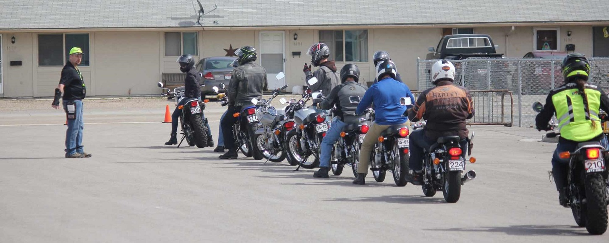

Level 3 Riders
You have been riding with your valid permit for awhile now. You have at least 1000 miles under your belt. You don't have to think, you just do. This is the level for you to be. You are ready for endorsement level training. In general, this is a one day class providing three hours of classroom instruction and 5 hours of practical range exercises. The classroom session covers advanced street riding skills, improving your perception of hazards and hazardous situations, allowing you to self-evaluate your level of risk taking. Range exercises will practice advanced braking, cornering, hazard avoidance and handling techniques.Training motorcycles are available and endorsement testing is included with this level of instruction. Obtaining an endorsement is the final step toward qualifying for motorcycle endorsement in Washington. Endorsement level training is not intended to be the last training course you will ever need.
The following are courses in Western Washington which align with Level 3:
- Washington Motorcycle Safety Training Endorsement Qualifying Course
- Cascade Motorcycle Safety Basic Rider Course 2
- SW Motorcycle Safety Intermediate Rider Training

Students are queueing for their practical exam.